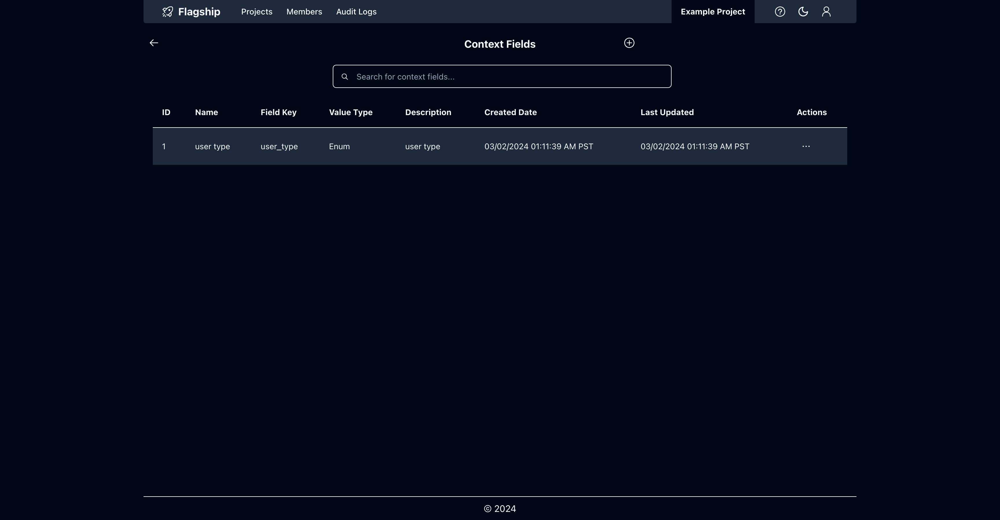
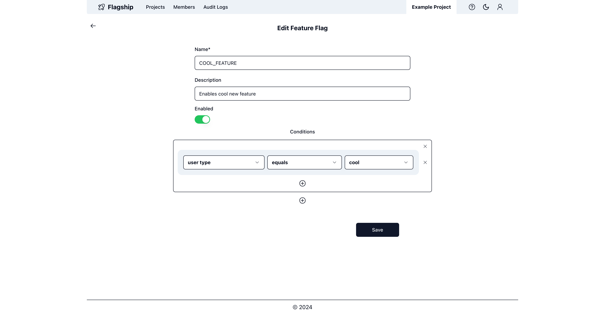

Overview
Flagship is a full-stack feature flag management platform.
How It Works
Flagship provides an intuitive web application to manage your feature flags.
A project typically maps to a specific system, e.g. a web app or backend system.
Within a project, you can create feature flags. You can configure feature flags to only be enabled under certain conditions.
You can also create context fields within a project. Context fields describe the context when resolving which feature flags are enabled. For example, suppose you have a website that you want to control with feature flags. When you ask the Flagship API to determine which feature flags are enabled for the current user, you need to describe the user to Flagship. So you may do this by providing the following context fields to Flagship: `user_id` and `country_code`. You would create a separate context field for each and tell Flagship their types (i.e. integer and string). You can then use these context fields in your feature flag conditions. For example, you could have conditions like:
(
`user_id` is one of [1,2,3] AND
`country_code` is not "US"
) OR
(
`country_code` is "US"
)
Most operations done via the UI are recorded via audit logs. For example, you can see a history of changes for a particular feature flag.
The Flagship web application also allows you to effectively manage users within the platform. Users must be invited from within Flagship. Each user is given a role and is assigned to one or more projects. The following roles are available (in order of increasing permissions): read only, standard, admin, and owner.
Getting Started
Running From Source
To run Flagship from source, follow these steps:
- Make sure you have the latest version of Docker installed and running
git clone git@github.com:alexschimpf/flagship.gitcd flagshipmake -C docker flagship- This will run the UI server, Admin API, Flags API, MySQL, and Redis Cluster via docker-compose
- Open https://localhost:3000 in your browser
- Log in with user
owner@flag.shipand password:Test123!
Production
To run Flagship in production, you can use the following images from Dockerhub:
| Name | Image |
|---|---|
| UI Server | alexschimpf/flagship-frontend:latest |
| Admin API | alexschimpf/flagship-admin:latest |
| Flags API | alexschimpf/flagship-flags:latest |
To configure these appropriately, please read Installation. To learn more about connecting your system to Flagship, please read SDK.
Example
You can find a complete example project using the Flagship platform here.
Components
UI Server
- Runs the Flagship UI
Admin API
- API server used by the Flagship UI
- Deals with:
- Login / Authentication
- Managing projects
- Managing context fields
- Managing feature flags
- Managing users
- Reading/writing audit logs
- etc.
Flags API
- Handles determining which feature flags are enabled for a given context
- This is what your system will be interacting with
Screenshots
Homepage
Members
Project Private Keys
System Audit Logs
Feature Flags
Edit Feature Flag
Feature Flag Audit Logs
Context Fields

Edit Context Field
Context Field Audit Logs
Light Mode
